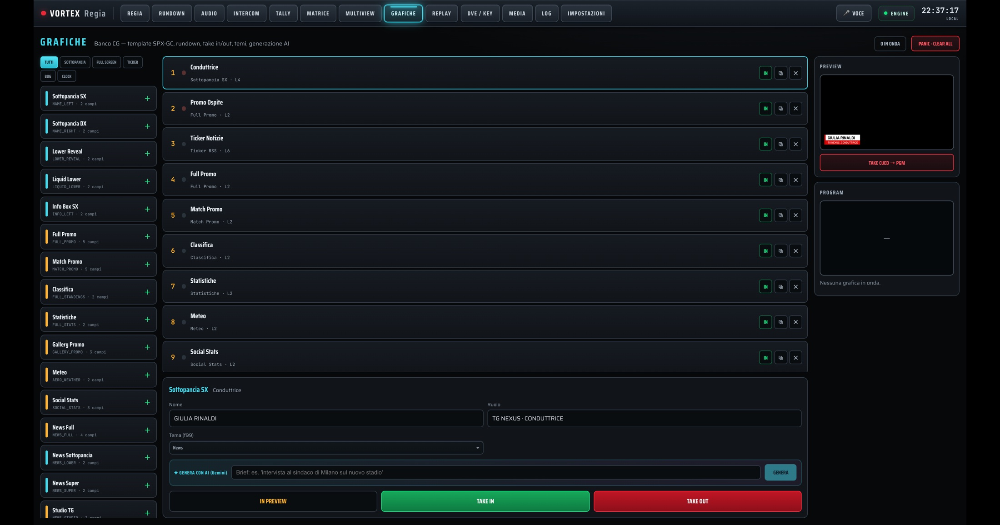
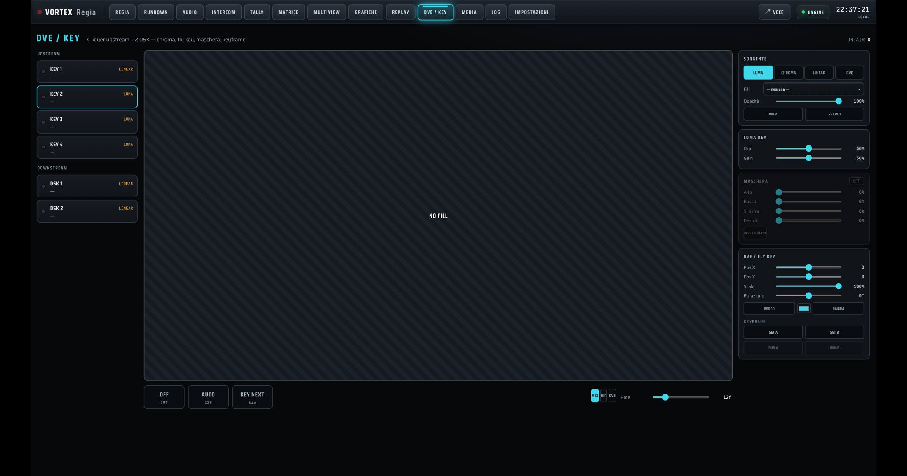
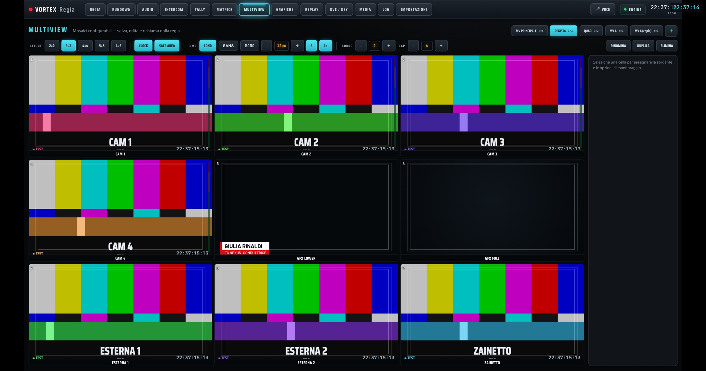
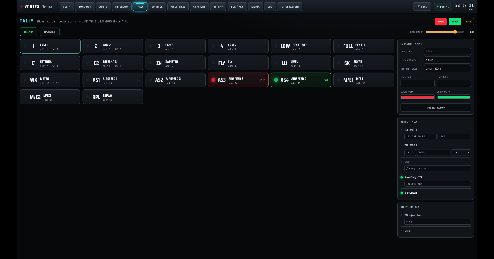
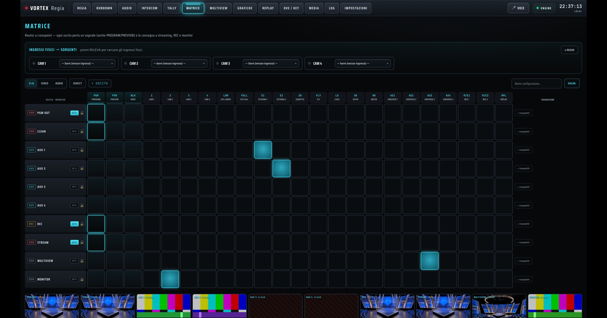
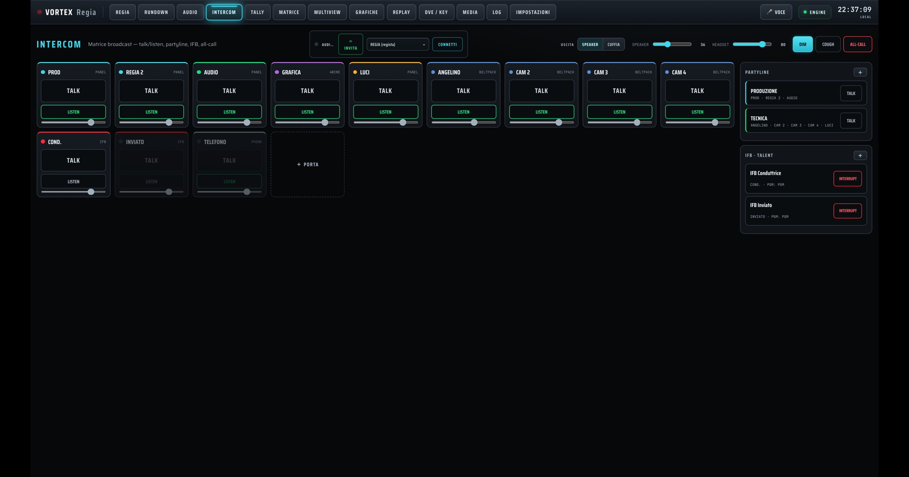
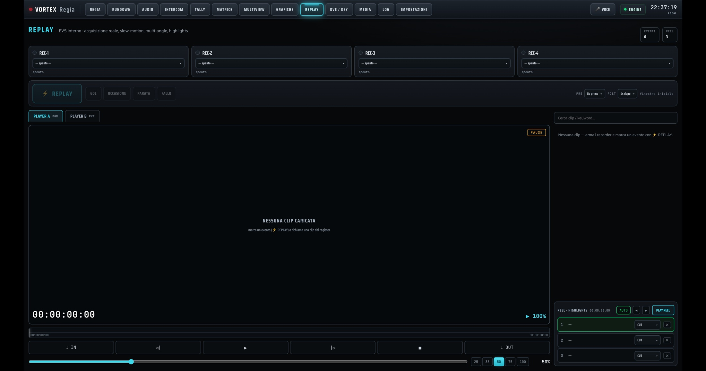
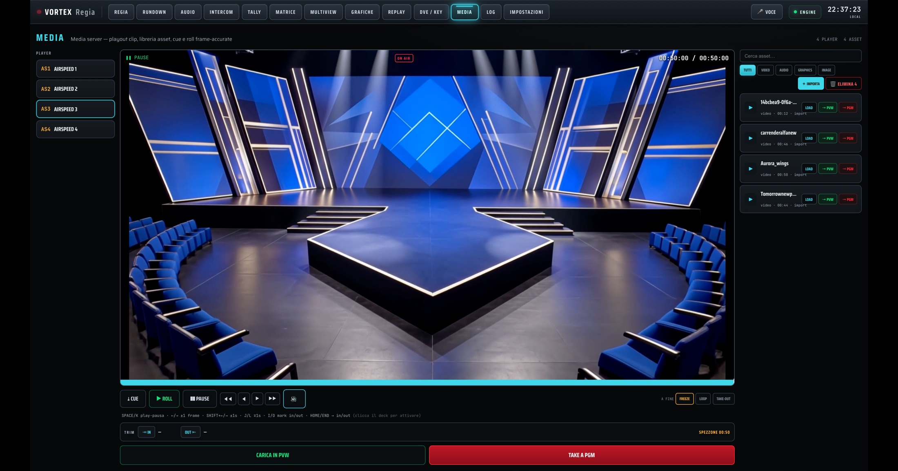
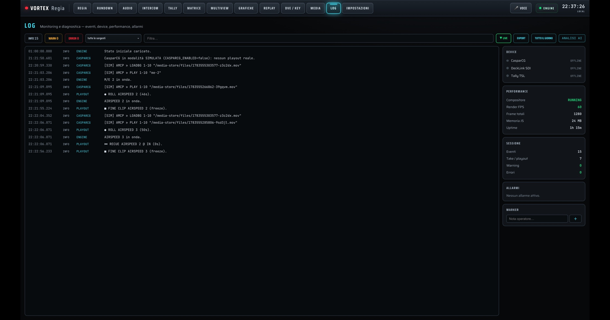
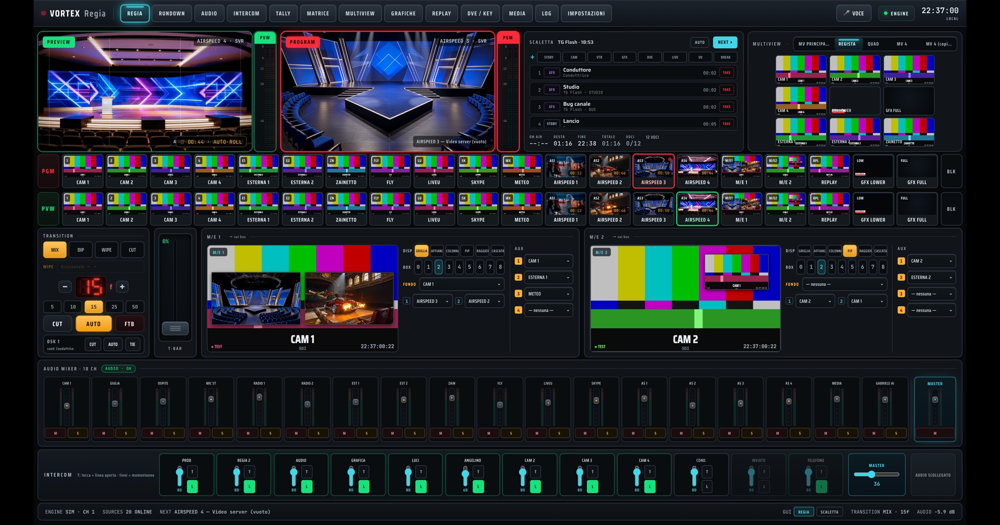

Prototipo funzionale con switching, rundown, audio broadcast, grafiche, replay e automazione AI. Le schermate mostrano il software reale con dati dimostrativi.
Raccoglie le notizie dalle fonti configurate, ne valuta importanza e rilevanza e suggerisce la scaletta del TG. Regia e redazione decidono cosa va in onda.
Ogni canale con filtro passa-alto, EQ parametrico, gate, compressore e limiter. Mix-minus per i remoti, monitoraggio loudness LUFS-S stimato e snapshot di scena.
Banco CG in standard SPX-GC: sottopancia, ticker, promo, classifiche e meteo. Da un brief, Gemini compila i contenuti dei template disponibili; tu verifichi la preview e fai TAKE.

Quattro keyer upstream e due DSK, luma e chroma key, fly key con posizione, scala, rotazione e keyframe. Program, Preview e controllo delle transizioni con la T-bar.

I moduli già presenti nel prototipo e le integrazioni hardware previste.

Mosaici 2×2 → 5×5, UMD, orologio, area di sicurezza e tally.

Supporto UMD, TSL 3.1/5.0, GPIO e Smart Tally.

Router a crosspoint: PGM, Clean, AUX, REC e Stream.

Talk/listen, partyline, IFB e fino a 16 N-1 su interfacce compatibili.

Replay da file e webcam; acquisizione DeckLink in sviluppo.

Video server: playout delle clip con cue, trim e roll.

Eventi, dispositivi, prestazioni e allarmi, con analisi AI.

Program, Preview, bus, transizioni, audio e intercom a portata di mano.
Dalla prima notizia alla messa in onda, i moduli principali sono riuniti in un solo ambiente software e restano da validare sul campo.